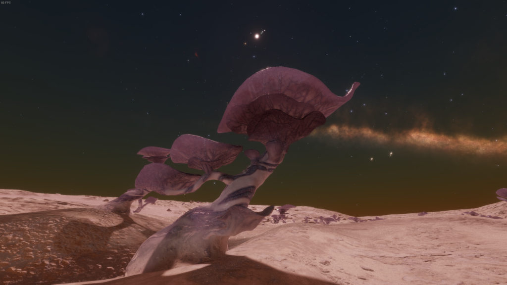
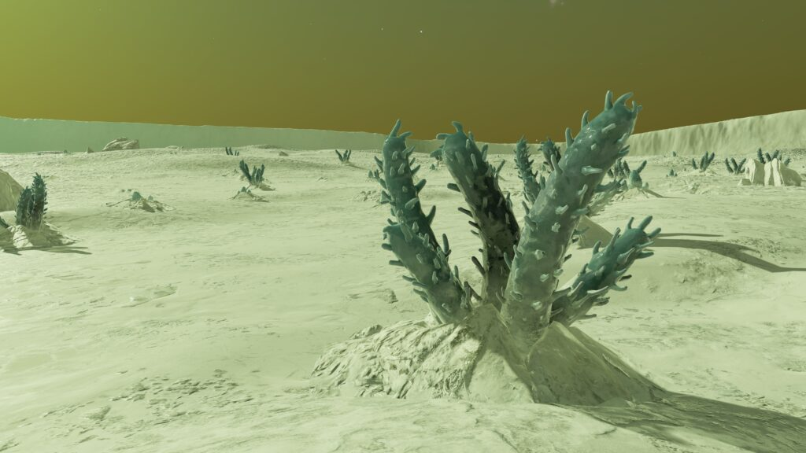
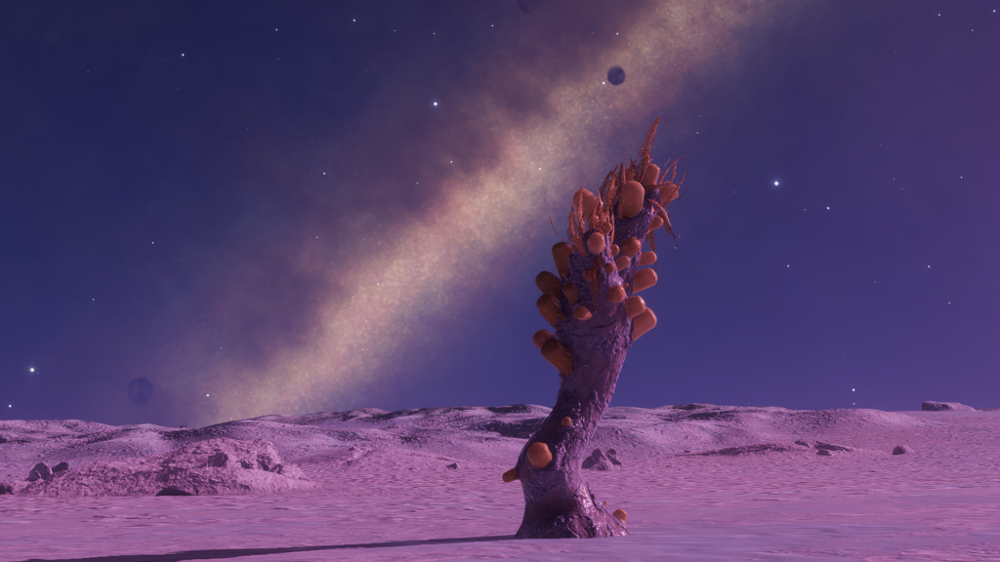
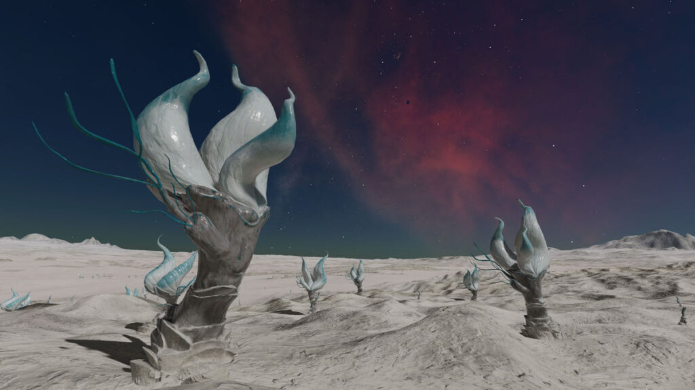
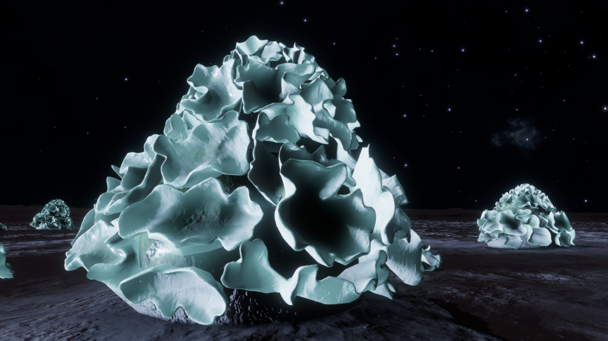
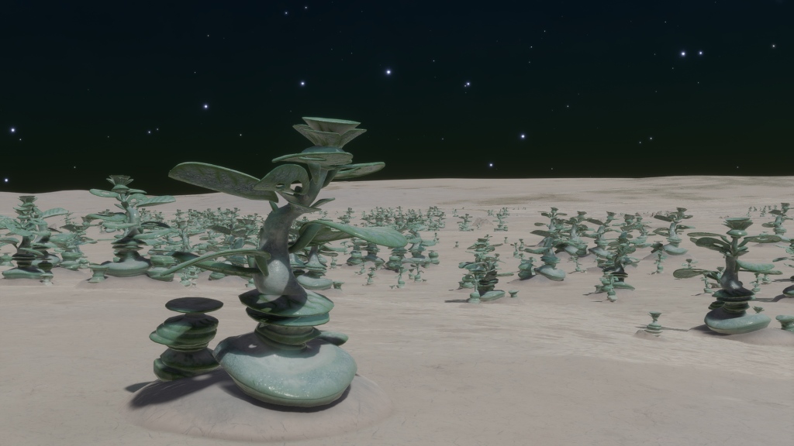

|  |  |  |  |
 |  |  |  |  |
 |  |  |  |  |
 |  |
A frozen field of Fonticulua Upupam – Emerald. Image courtesy of Cmdr. Arras DeCairo
Photosynthetic colony organisms found exclusively on ice worlds, where they have embraced the surrounding frozen material as a form of protection. As the Fonticulua develop they melt ice from around them, absorbing the liquid through tiny cellular pores and passing it to the colony’s reproductive edge. Here the liquid is excreted and immediately refreezes, creating hard translucent exoskeletons that provide protection for the organisms. Frond structures create a wide flat space that expose internal photosynthetic cells to as much light as possible. Reproduction appears to occur by colony division, most likely when a shard of the structure collapses under its own weight and the smaller shard creates a new colony.
Fonticulua seem mostly to favour gently undulating plains, but Digitos does demonstrate a capacity for rougher terrain.
Variant Determinant: Stellar Class
Stellar Class and Variant
| Stellar Class | O | B | A | F | G | K | M | L | T | TTS | Ae | Y | W | D | N |
| Variant | Gy | Li | Gr | Ye | Te | Em | Am | Mv | Or | Re | Mr | Oc | In | Tu | Sg |
Planetary Body Type: Ice or Rocky Ice
Atmosphere: Argon, Methane, Neon, Nitrogen or Oxygen
Gravity: Less than 0.29G
Minimum Colonial Separation: 500m
| Species Name | Percentage of recorded Fonticulua Population | Vista Genomics Offer Price |
|---|---|---|
| Fonticulua Campestris | 59.13% | 1,000,000 |
| Fonticulua Digitos | 17.15% | 1,804,100 |
| Fonticulua Fluctus | 0.42% | 20,000,000 |
| Fonticulua Lapida | 15.70% | 3,111,000 |
| Fonticulua Segmentatus | 1.17% | 19,010,800 |
| Fonticulua Upupam | 6.44% | 5,727,600 |
All data as at 30th September 3311.
For the most up-to-date statistics and Vista Genomics pricing, please visit:
Canonn Bioforge or the data-enriched Codex Regions.

These Fonticulua thrive in argon atmospheres, and can reach four metres in height. They feature huge leaf-like structures to capture sunlight for conversion to energy.
Planetary Body Type: Ice (93%), Rocky Ice (7%)
Atmosphere: Argon
Volcanism: Low numbers existing on planets across a spectrum of Volcanic activity. Potentially indicates tolerance rather than preference.
Temperature Pressure Gravity
| Minimum | Average | Mode | Maximum | |
| Temperature (K) | 50.00 | 72.57 | 56.00 | 158.73 |
| Pressure (atm) | 0.000986953 | 0.011156589 | 0.000996042 | 0.098163773 |
| Gravity (G) | 0.03 | 0.16 | 0.05 | 0.28 |
Galactic Arm Preference: No Preference

A Fonticulua Species that thrives in methane-based atmospheres, sprouting a cluster of cylindrical tubes directly from the ice.
Planetary Body Type: Ice (99%), Rocky Ice (1%)
Atmosphere: Methane
Volcanism: Low numbers existing on planets with Volcanic activity. Potentially indicates tolerance rather than preference.
Temperature Pressure Gravity
| Minimum | Average | Mode | Maximum | |
| Temperature (K) | 82.71 | 96.05 | 93.00 | 108.60 |
| Pressure (atm) | 0.027120796 | 0.065702173 | 0.040195797 | 0.098692317 |
| Gravity (G) | 0.03 | 0.04 | 0.04 | 0.06 |
Galactic Arm Preference: No Preference

A Species of Fonticulua that exists on worlds with oxygen atmospheres. They produce coiling wave-shaped structures which tilt toward sunlight.
Planetary Body Type: Ice (100%)
Atmosphere: Oxygen
Volcanism: Insignificant
Temperature Pressure Gravity
| Minimum | Average | Mode | Maximum | |
| Temperature (K) | 143.80 | 153.02 | 150.52 | 199.44 |
| Pressure (atm) | 0.012485667 | 0.036138345 | 0.012485667 | 0.080097570 |
| Gravity (G) | 0.24 | 0.26 | 0.27 | 0.27 |
Galactic Arm Preference: No apparent preference but volume of recorded discoveries is relatively low.

A Fonticulua Species that exists in atmospheres with a heavy concentration of nitrogen. Growing up along the main stalk are bright gem-like pods. which can break off and create new colonies.
Planetary Body Type: Ice (98%), Rocky Ice (2%)
Atmosphere: Nitrogen
Volcanism: Insignificant
Temperature Pressure Gravity
| Minimum | Average | Mode | Maximum | |
| Temperature (K) | 50.00 | 66.92 | 61.46 | 89.50 |
| Pressure (atm) | 0.000987147 | 0.115904983 | 0.002146604 | 1492.063913151 |
| Gravity (G) | 0.04 | 0.24 | 0.27 | 0.62 |
Galactic Arm Preference: No Preference

A Species of Fonticulua found in atmospheres dominated by neon and appearing as a pyramid-shaped cluster of frilled sections.
Planetary Body Type: Ice
Atmosphere: Neon
Volcanism: Insignificant
Temperature Pressure Gravity
| Minimum | Average | Mode | Maximum | |
| Temperature (K) | 50.23 | 63.64 | 61.21 | 74.67 |
| Pressure (atm) | 0.000989261 | 0.002903467 | 0.000989261 | 0.061862765 |
| Gravity (G) | 0.25 | 0.27 | 0.27 | 0.28 |
Galactic Arm Preference: No apparent preference but volume of recorded discoveries is relatively low.

This Fonticulua Species can be found on ice worlds with argon-rich atmospheres. They produce broad hoop-shaped structures to better reflect weak sunlight onto themselves for photosynthesis.
Planetary Body Type: Ice (98%), Rocky Ice (2%)
Atmosphere: Argon
Volcanism: Insignificant
Temperature Pressure Gravity
| Minimum | Average | Mode | Maximum | |
| Temperature (K) | 60.76 | 81.01 | 83.00 | 123.13 |
| Pressure (atm) | 0.017798159 | 0.061203524 | 0.017798159 | 0.098655982 |
| Gravity (G) | 0.21 | 0.25 | 0.27 | 0.28 |
Galactic Arm Preference: No Preference
| | | | |
| | | | |
| | | | |
| |